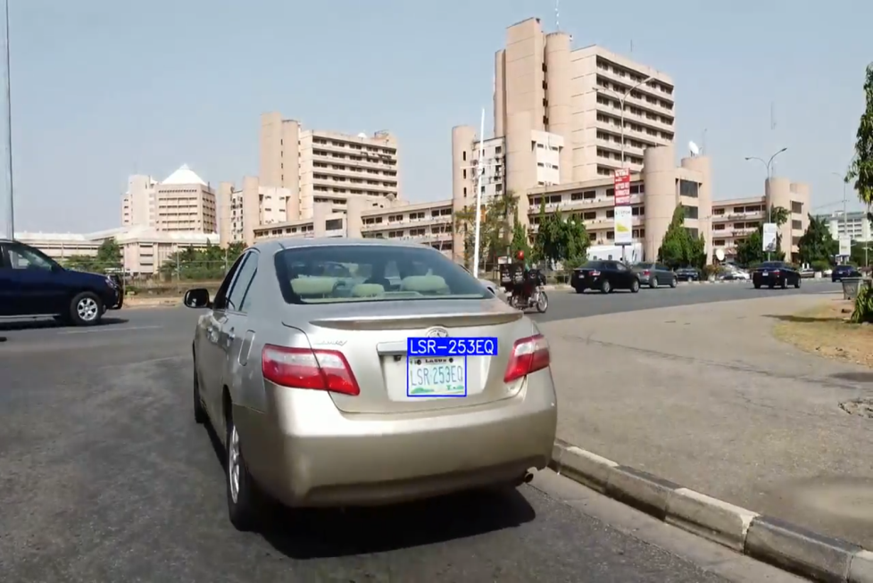

OCR for Nigerian License Plate
Overview
Optical Character Recognition (OCR) is a technology that enables a computer to identify and read text from images or scanned documents. It works by analyzing the shapes and patterns of characters in an image and converting them into machine-readable text. It is commonly used to extract text from photographs, printed documents, license plates, and signs.
Problem Statement
Traffic lights are used in Nigeria to control the flow of vehicles and improve road safety. However, many drivers do not obey traffic lights, which makes the roads unsafe for other drivers and pedestrians. This lack of compliance often leads to accidents, traffic congestion, and unnecessary loss of life.
Dataset
The dataset used is comprised of 4365 images of cars with the Nigerian license plate, divided into 70% train, 20% test and 10% validation. The link to the dataset is provided here.
Plate detection model
The yolov11s.pt model was used for detection of license plate due to its high accuracy and moderate computational cost. Click here to check documentation.
OCR model
The model used is fast-plate-ocr, a lightweight and fast OCR framework for license plate text recognition. Click here for model documentation.
Project Workflow
Data collection --> Data Preprocessing and Augmentation --> Detection model training --> Cropping out detected plate --> Plate OCR
-

License plate detection and OCR